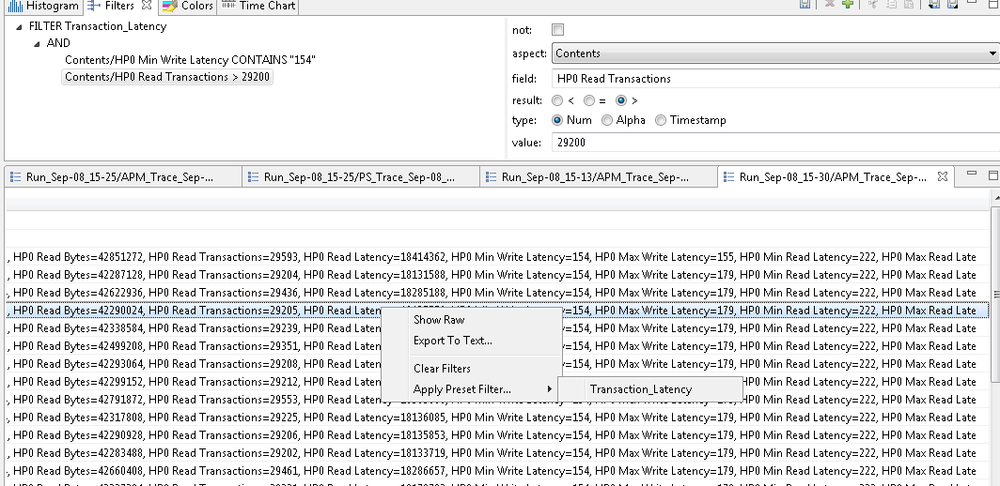

Filters View
The Filters view allows the user to define preset filters that can be applied to any events table.

The filters can be more complex than what can be achieved with the filter header row in the events table. The filter is defined in a tree node structure, where the node types can be any of TRACETYPE,AND, OR, CONTAINS, EQUALS, MATCHES or COMPARE. Some nodes types have restrictions on their possible children in the tree.
The TRACETYPE node filters against the trace type of the trace as defined in a plug-in extension or in a custom parser. When used, any child node will have its aspect combo box restricted to the possible aspects of that trace type.
The AND node applies the logical and condition on all of its children. All children conditions must be true for the filter to match. A not operator can be applied to invert the condition.
The OR node applies the logical or condition on all of its children. At least one children condition must be true for the filter to match. A not operator can be applied to invert the condition.
The CONTAINS node matches when the specified event aspect value contains the specified value string. A not operator can be applied to invert the condition. The condition can be case sensitive or insensitive.
The EQUALS node matches when the specified event aspect value equals exactly the specified value string. A not operator can be applied to invert the condition. The condition can be case sensitive or insensitive.
The MATCHES node matches when the specified event aspect value matches against the specified regular expression. A not operator can be applied to invert the condition.
The COMPARE node matches when the specified event aspect value compared with the specified value gives the specified result. The result can be set to smaller than, equal or greater than. The type of comparison can be numerical, alphanumerical or based on time stamp. A not operator can be applied to invert the condition.
For numerical comparisons, strings prefixed by "0x", "0X" or "#" are treated as hexadecimal numbers and strings prefixed by "0" are treated as octal numbers.
For time stamp comparisons, strings are treated as seconds with or without fraction of seconds. This corresponds to the TTT format in the Time Format preferences. The value for a selected event can be found in the Properties view under the Timestamp property. The common 'Timestamp' aspect can always be used for time stamp comparisons regardless of its time format.
Filters can be added, deleted, imported and exported using the buttons in the Filters view toolbar. The nodes in the view can be Cut (Ctrl-X), Copied (Ctrl-C) and Pasted (Ctrl-V) by using the buttons in the toolbar or by using the key bindings. This makes it easier to quickly build new filters from existing ones. Changes to the preset filters are only applied and persisted to disk when the Save filtersbutton is pressed.